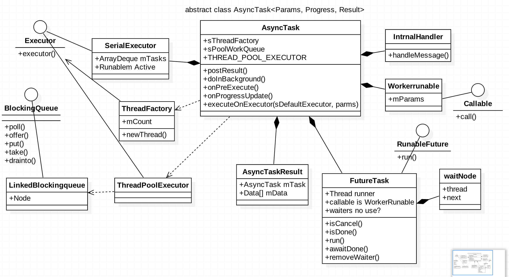

知识总结之 AsyncTask 源码解析
虽然这个类没什么特别地方，也是很常用的类，前段时间面试发现很多公司还是很喜欢问到这个类的原理，及使用场景，so，这里做下总结。

AsyncTask 源码解析
一、 一句话概括
「AsyncTask = ThreadPool + Handler；」
AsyncTasks是android提供的轻量级执行异步任务的类，提供了执行耗时任务的方法，及各个任务阶段UI线程回调。
二、 优缺点
优点
使用简单，适度封装
轻量级，有一定可控度
缺点
多个任务同时使用时，默认会用串行化执行器，缺乏线程调度。
任务取消需要自行控制，有一定内存泄漏风险。
三、 类结构

四、 知道点
1,WorkerRunable and FutureTask
每new一个AsyncTask, 会在构造器中新建一个WorkerRunable 和 FutureTask。其中WorkerRunable 实现了Callable借口，其作用个人理解只是 实际任务执行与调度器FutureTask 的一个沟通桥梁，
而FutureTask作为每次任务的一次封装，被放入Execute等代线程池执行。
2，SerialExecutor
‘’‘
/**
* Creates a new asynchronous task. This constructor must be invoked on the UI thread.
*/
public AsyncTask() {
mWorker = new WorkerRunnable<Params, Result>() {
public Result call() throws Exception {
mTaskInvoked.set(true);
Result result = null;
try {
Process.setThreadPriority(Process.THREAD_PRIORITY_BACKGROUND);
//noinspection unchecked
result = doInBackground(mParams);
Binder.flushPendingCommands();
} catch (Throwable tr) {
mCancelled.set(true);
throw tr;
} finally {
postResult(result);
}
return result;
}
};
mFuture = new FutureTask<Result>(mWorker) {
@Override
protected void done() {
try {
postResultIfNotInvoked(get());
} catch (InterruptedException e) {
android.util.Log.w(LOG_TAG, e);
} catch (ExecutionException e) {
throw new RuntimeException("An error occurred while executing doInBackground()",
e.getCause());
} catch (CancellationException e) {
postResultIfNotInvoked(null);
}
}
};
}
‘’‘
任务执行器，可以说是Task调度器，决定了每个task是按照什么规程执行。实现了Executor接口，用ArrayDeque保存了放进了的task。
‘’’
/**
* An {@link Executor} that executes tasks one at a time in serial
* order. This serialization is global to a particular process.
*/
public static final Executor SERIAL_EXECUTOR = new SerialExecutor();
private static volatile Executor sDefaultExecutor = SERIAL_EXECUTOR;
‘’’
‘’‘
private static final BlockingQueue
new LinkedBlockingQueue
static {
ThreadPoolExecutor threadPoolExecutor = new ThreadPoolExecutor(
CORE_POOL_SIZE, MAXIMUM_POOL_SIZE, KEEP_ALIVE_SECONDS, TimeUnit.SECONDS,
sPoolWorkQueue, sThreadFactory);
threadPoolExecutor.allowCoreThreadTimeOut(true);
THREAD_POOL_EXECUTOR = threadPoolExecutor;
}
’‘’
从这里可以看出AsyncTask默认的调度执行器用的这个SerialExecutor，SERIAL_EXECUTOR为静态类型，而这个类决定了Task是串行执行，且每个进程共享一个执行器，所以需要自己保证任务执行的优先级及频率。
THREAD_POOL_EXECUTOR线程池，BlockingQueue初始化大小为128，说明了线程池中runable个数超过128时，将会阻塞，影响性能及正常使用。
‘’‘
private static class SerialExecutor implements Executor {
final ArrayDeque
Runnable mActive;
public synchronized void execute(final Runnable r) {
mTasks.offer(new Runnable() {
public void run() {
try {
r.run();
} finally {
scheduleNext();
}
}
});
if (mActive == null) {
scheduleNext();
}
}
protected synchronized void scheduleNext() {
if ((mActive = mTasks.poll()) != null) {
THREAD_POOL_EXECUTOR.execute(mActive);
}
}
}
’‘’
3，执行入口跟踪
‘’‘
@MainThread
public final AsyncTask
return executeOnExecutor(sDefaultExecutor, params);
}
* <p>This method must be invoked on the UI thread.
*
* @param exec The executor to use. {@link #THREAD_POOL_EXECUTOR} is available as a
* convenient process-wide thread pool for tasks that are loosely coupled.
* @param params The parameters of the task.
*
* @return This instance of AsyncTask.
*
* @throws IllegalStateException If {@link #getStatus()} returns either
* {@link AsyncTask.Status#RUNNING} or {@link AsyncTask.Status#FINISHED}.
*
* @see #execute(Object[])
*/
@MainThread
public final AsyncTask<Params, Progress, Result> executeOnExecutor(Executor exec,
Params... params) {
if (mStatus != Status.PENDING) {
switch (mStatus) {
case RUNNING:
throw new IllegalStateException("Cannot execute task:"
+ " the task is already running.");
case FINISHED:
throw new IllegalStateException("Cannot execute task:"
+ " the task has already been executed "
+ "(a task can be executed only once)");
}
}
mStatus = Status.RUNNING;
onPreExecute();
mWorker.mParams = params;
exec.execute(mFuture);
return this;
}
’‘’
上面方法为执行方法入口，这里可以自定义执行调度器Executor，实现自己的Task调度规则。
建议适当使用AsyncTask，单纯的后台任务可以用线程池，如果有大量后台执行调度任务，建议使用JobQueue开源组件，当然可以自己升级JobQueue，
添加JobScheduler支持。
4. BlockingQueue
BlockingQueue很好的解决了多线程中，如何高效安全“传输”数据的问题。通过这些高效并且线程安全的队列类，为我们快速搭建高质量的多线程程序带来极大的便利。某些情况下会挂起线程（即阻塞），一旦条件满足，被挂起的线程又会自动被唤醒
该类为多线程环境下的生产者与消费者资源的竞争提供了有效的调度共享规则。
方法
- offer，如果可能将对象放入队列, 返回true。反之false。可加参数 时间 给以一定时间限制。
- put， 如果可能将对象放入队列，反之将阻塞，直到条件满足。
- poll， 从队列拿出一个对象，取不到返回null。可加参数 时间 给以一定时间限制。
- take 取出对象，否则阻塞等待返回对象。
- drainTo 一次性获取所有对象
子类
- ArrayBlockingQueue, 长数组实现，整形变量控制头部和尾部。
- LinkedBlockingQueue, 内部缓存队列由链表组成，默认为无限大。
- DelayQueue，没有大小限制，so生产者永不会由阻塞，只手消费者才会。
- PriorityBlockingQueue, 基于优先级，不会阻塞数据生产者，只会在没有可消费的数据时，阻塞消费者。
- SynchronousQueue, 无缓冲等待队列，等于没有缓存的BlockingQueue，随时可能阻塞。